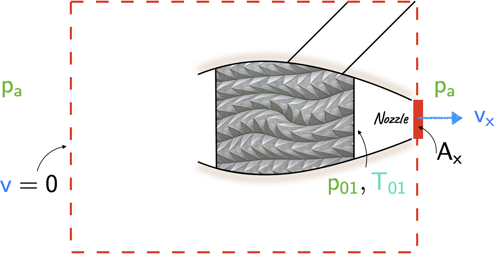
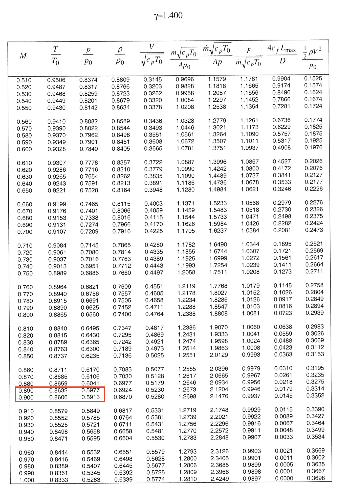
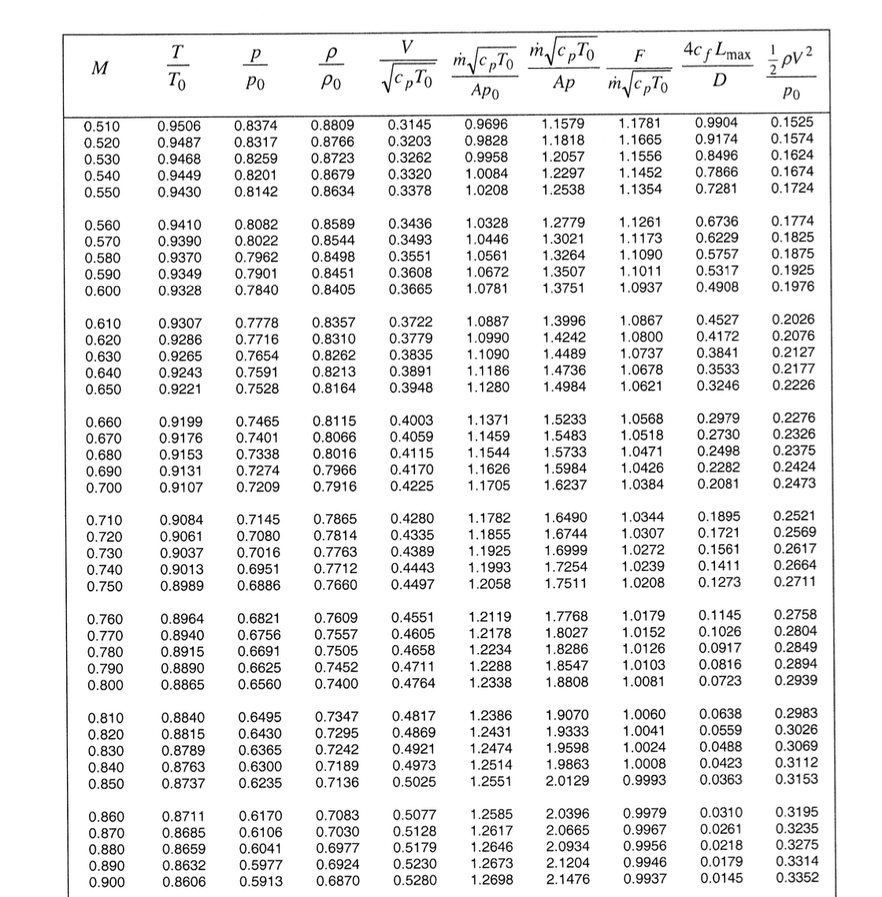
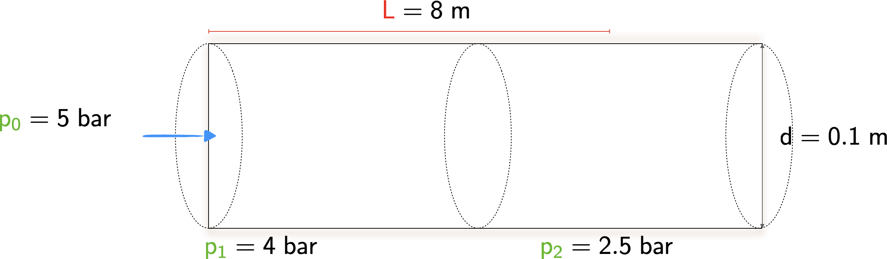

L24 examples
Problem 1
A stationary jet engine is run on a test bed at sea level. The stagnation temperature and stagnation pressure in the tail pipe are \(\require{color}{\color[rgb]{0.164799,0.878862,0.723179}700^{\circ}\; C}\) and \(\require{color}{\color[rgb]{0.315209,0.728565,0.037706}200 \; kPa}\) and the tail pipe ends with a convergent nozzle having exit diameter 0.5 m, i.e., the area is the minimum at the exit. Determine the thrust produced by the engine. Treat the combustion products as a perfect gas with the same properties as air. Assume an ambient pressure of \(\require{color}{\color[rgb]{0.315209,0.728565,0.037706}101.325 \; kPa}\) and ambient temperature of \(\require{color}{\color[rgb]{0.164799,0.878862,0.723179}288.15 \; K}\) and neglect the mass of fuel burnt in the engine.

Solution
In the nozzle, we know the inlet stagnation pressure, \(\require{color}{\color[rgb]{0.315209,0.728565,0.037706}p_{01}}\) and the exit static pressure \(\require{color}{\color[rgb]{0.315209,0.728565,0.037706}p_a}\). Thus, we have the ratio
\[ \large \require{color} \frac{{\color[rgb]{0.315209,0.728565,0.037706}p_a}}{{\color[rgb]{0.315209,0.728565,0.037706}p_{01}}} = \frac{101.325}{200} = 0.5066 < 0.5283 \]
where \(0.5283\) value arises when the Mach number is 1 (see last row of the subsonic tables). As the nozzle exit (where the area is minimum and also corresponds to the throat) cannot exceed Mach 1, we assume that the exit Mach number is unity.
From the steady flow momentum equation we can write
\[ \large \require{color} {\color[rgb]{0.986252,0.007236,0.027423}Thrust} + \left({\color[rgb]{0.315209,0.728565,0.037706}p_a} - {\color[rgb]{0.315209,0.728565,0.037706}p_a} \right)A_{in} - \left( {\color[rgb]{0.315209,0.728565,0.037706}p_{x}} - {\color[rgb]{0.315209,0.728565,0.037706}p_{a}} \right)A_{x} = \dot{m}_{x} {\color[rgb]{0.059472,0.501943,0.998465}v_{x}} - \dot{m}_{in} {\color[rgb]{0.059472,0.501943,0.998465}v_{in} } \]
where we recognize that the \(-\require{color}{\color[rgb]{0.315209,0.728565,0.037706}p_a}\) term arises because we are dealing with gaguge pressures.
\[ \large \require{color} \Rightarrow {\color[rgb]{0.986252,0.007236,0.027423}Thrust} - \left( {\color[rgb]{0.315209,0.728565,0.037706}p_{x}} - {\color[rgb]{0.315209,0.728565,0.037706}p_{a}} \right) A_{x} = {\color[rgb]{0.918231,0.469102,0.038229}\rho_{x}} A_{x} {\color[rgb]{0.059472,0.501943,0.998465}v_{x}} {\color[rgb]{0.059472,0.501943,0.998465}v_{x}} - {\color[rgb]{0.990448,0.502245,0.032881}\rho_{in}} A_{in} {\color[rgb]{0.059472,0.501943,0.998465}v_{in}} {\color[rgb]{0.059472,0.501943,0.998465}v_{in} } \]
because we assume that the \(\require{color}{\color[rgb]{0.059472,0.501943,0.998465}v_{in}} \approx 0\). Next, we write
\[ \large \require{color} {\color[rgb]{0.986252,0.007236,0.027423}Thrust} + {\color[rgb]{0.315209,0.728565,0.037706}p_{a}} A_x - {\color[rgb]{0.315209,0.728565,0.037706}p_{x}} A_{x} = {\color[rgb]{0.918231,0.469102,0.038229}\rho_{x}} A_{x} {\color[rgb]{0.059472,0.501943,0.998465}v_{x}}^2 \]
which leads to
\[ \large \require{color} \Rightarrow {\color[rgb]{0.986252,0.007236,0.027423}Thrust} = {\color[rgb]{1.000000,0.869732,0.000000}F_{x}} - {\color[rgb]{0.315209,0.728565,0.037706}p_{a}} A_{x} \]
This may be re-written as
\[ \large \require{color} \Rightarrow A_{x} \left( \frac{{\color[rgb]{1.000000,0.869732,0.000000}F_{x}}}{\dot{m} \sqrt{{\color[rgb]{0.986252,0.007236,0.027423}c}_{\color[rgb]{0.315209,0.728565,0.037706}p} {\color[rgb]{0.164799,0.878862,0.723179}T_{01}}}} \times \frac{ \dot{m} \sqrt{ {\color[rgb]{0.986252,0.007236,0.027423}c}_{\color[rgb]{0.315209,0.728565,0.037706}p} {\color[rgb]{0.164799,0.878862,0.723179}T_{01}}}}{A_{x} {\color[rgb]{0.315209,0.728565,0.037706}p_{01}} } {\color[rgb]{0.315209,0.728565,0.037706}p_{01}} - {\color[rgb]{0.315209,0.728565,0.037706}p_{a}} \right) \]
Plugging in the values…
\[ \large \require{color} \Rightarrow \frac{\pi}{4} 0.5^2 \left( 0.9897 \times 1.2810 \times {\color[rgb]{0.315209,0.728565,0.037706}200} - {\color[rgb]{0.315209,0.728565,0.037706}101.325} \right) = {\color[rgb]{0.986252,0.007236,0.027423}29.91 \; kN} \]
Problem 2
In flight at a height of \(15,000 \; m\) and an airspeed of \(\require{color}{\color[rgb]{0.059472,0.501943,0.998465}265 \; m/s}\), the same engine is operated with the same stagnation pressure and temperature ratios across it as in the sea level test. Determine the thrust produced at this flight condition. Assume standard atmospheric conditions, i.e., at \(15,000 \; m\) ambient pressure and temperature are given by \(\require{color}{\color[rgb]{0.315209,0.728565,0.037706}p_{a} = 12.058 \; kPa} \; \; {\color[rgb]{0.164799,0.878862,0.723179}T_{a} = 216.69 \; K }\). Neglect the mass of fuel burnt in the engine. The ratio of the stagnation pressure in the tail pipe to the ambient pressure must be the same as in the sea level test. The stagnation temperature to ambient temperature must also be the same across the two tests. You can assume \(\require{color}{\color[rgb]{0.986252,0.007236,0.027423}c}_{\color[rgb]{0.315209,0.728565,0.037706}p} = {\color[rgb]{0.986252,0.007236,0.027423}1006} \; \frac{J}{kg \cdot K}\)
Solution
At a height of \(15,000 \; m\), at a speed of \(\require{color}{\color[rgb]{0.059472,0.501943,0.998465}265 \; m/s}\), the Mach number is given by
\[ \large \require{color} {\color[rgb]{0.041732,0.352132,0.699576}M} = \frac{{\color[rgb]{0.059472,0.501943,0.998465}v}}{{\color[rgb]{0.985542,0.009453,0.999181}a}} = \frac{{\color[rgb]{0.059472,0.501943,0.998465}265}}{\sqrt{\gamma \times R \times {\color[rgb]{0.164799,0.878862,0.723179}216.69}}} = \frac{{\color[rgb]{0.059472,0.501943,0.998465}265}}{\sqrt{1.4 \times 287 \times {\color[rgb]{0.164799,0.878862,0.723179}216.69}} = {\color[rgb]{0.041732,0.352132,0.699576}0.8981}} \]
From the subsonic Mach number tables, and the ambient pressure value of \(\require{color}{\color[rgb]{0.315209,0.728565,0.037706}p_{a} = 12.058 \; kPa}\), we can work out the stagnation pressure at the engine intake by interpolating between two rows of subsonic tables on page 8 of 38 in the gas properties tables; see below.

Thus the stagnation pressure at the engine intake is
\[ \large \require{color} \frac{{\color[rgb]{0.315209,0.728565,0.037706}p_{0}}}{ {\color[rgb]{0.315209,0.728565,0.037706}p} / {\color[rgb]{0.315209,0.728565,0.037706}p_{0}} } = \frac{{\color[rgb]{0.315209,0.728565,0.037706}12.058}}{0.5922} = {\color[rgb]{0.315209,0.728565,0.037706}20.36 \; kPa} \]
and the stagnation temperature at the engine intake is
\[ \large \require{color} \frac{{\color[rgb]{0.164799,0.878862,0.723179}T_0}}{{\color[rgb]{0.164799,0.878862,0.723179}T/T_0}} = \frac{{\color[rgb]{0.164799,0.878862,0.723179}216.69}}{0.8615} = {\color[rgb]{0.164799,0.878862,0.723179}251.5 \; K} \]
To maintain the same ratios as in the sea-level test, the stagnation conditions in the tail pipe must be
\[ \large \require{color} {\color[rgb]{0.315209,0.728565,0.037706}p_{01}} = {\color[rgb]{0.315209,0.728565,0.037706}200} \times \frac{{\color[rgb]{0.315209,0.728565,0.037706}20.36}}{{\color[rgb]{0.315209,0.728565,0.037706}101.35}} = {\color[rgb]{0.315209,0.728565,0.037706}49.19 \; kPa} \]
and
\[ \large \require{color} {\color[rgb]{0.164799,0.878862,0.723179}T_0} = \left({\color[rgb]{0.164799,0.878862,0.723179}700^{\circ} C} + {\color[rgb]{0.164799,0.878862,0.723179}273.15} \right) \times \frac{{\color[rgb]{0.164799,0.878862,0.723179}251.5}}{{\color[rgb]{0.164799,0.878862,0.723179}288.15}} = {\color[rgb]{0.164799,0.878862,0.723179}849.37 \; K} \]
Now using the steady flow momentum equation yields
\[ \large \require{color} {\color[rgb]{0.986252,0.007236,0.027423}Thrust} + {\color[rgb]{0.315209,0.728565,0.037706}p_{a}} A_{x} - {\color[rgb]{0.315209,0.728565,0.037706}p_{x}} A_{x} = {\color[rgb]{0.918231,0.469102,0.038229}\rho_{x}} A_{x} {\color[rgb]{0.059472,0.501943,0.998465}v_{x}} \left( {\color[rgb]{0.059472,0.501943,0.998465}v_{x}} - {\color[rgb]{0.059472,0.501943,0.998465}265} \right) \]
where we have made use of continuity as well. Now unlike at sea level, there is now a difference between the stagnation pressure at the inlet and the static pressure at the exit.
\[ \large \require{color} {\color[rgb]{0.986252,0.007236,0.027423}Thrust} = {\color[rgb]{1.000000,0.869732,0.000000}F_{x}} - {\color[rgb]{0.315209,0.728565,0.037706}p_{a}} A_{x} - \dot{m} \times {\color[rgb]{0.059472,0.501943,0.998465}265} \]
\[ \large \require{color} \Rightarrow A_{x} \left( \frac{{\color[rgb]{1.000000,0.869732,0.000000}F_{x}}}{\dot{m} \sqrt{{\color[rgb]{0.986252,0.007236,0.027423}c}_{\color[rgb]{0.315209,0.728565,0.037706}p} {\color[rgb]{0.164799,0.878862,0.723179}T_{0}}}} \times \frac{ \dot{m} \sqrt{ {\color[rgb]{0.986252,0.007236,0.027423}c}_{\color[rgb]{0.315209,0.728565,0.037706}p} {\color[rgb]{0.164799,0.878862,0.723179}T_{0}}}}{A_{x} {\color[rgb]{0.315209,0.728565,0.037706}p_{0}} } {\color[rgb]{0.315209,0.728565,0.037706}p_{0}} - {\color[rgb]{0.315209,0.728565,0.037706}p_{a}} - \frac{ \dot{m} \sqrt{ {\color[rgb]{0.986252,0.007236,0.027423}c}_{\color[rgb]{0.315209,0.728565,0.037706}p} {\color[rgb]{0.164799,0.878862,0.723179}T_{0}}}}{A_{x} {\color[rgb]{0.315209,0.728565,0.037706}p_{0}} } \times \frac{{\color[rgb]{0.059472,0.501943,0.998465}265}}{\sqrt{{\color[rgb]{0.986252,0.007236,0.027423}c}_{\color[rgb]{0.315209,0.728565,0.037706}p} {\color[rgb]{0.164799,0.878862,0.723179}T_{0}}} } {\color[rgb]{0.315209,0.728565,0.037706}p_{0}}\right) \]
\[ \large \require{color} = \frac{\pi}{4} \times 0.5^2 \left( 0.99 \times 1.281 \times {\color[rgb]{0.315209,0.728565,0.037706}40.19} - {\color[rgb]{0.315209,0.728565,0.037706}12.06} - 1.281 \times \frac{{\color[rgb]{0.059472,0.501943,0.998465}265}}{\sqrt{{\color[rgb]{0.986252,0.007236,0.027423}1006} \times {\color[rgb]{0.164799,0.878862,0.723179}849.4}}} \times {\color[rgb]{0.315209,0.728565,0.037706}40.19} \right) = {\color[rgb]{0.986252,0.007236,0.027423}4.74 \; kN} \]
Problem 3
A pipe of constant inside diameter of \(\mathsf{0.1 \; m}\) is supplied with air \(\mathsf{\left( \gamma = 1.4 \right)}\) at a stagnation pressure of \(\mathsf{5 \; bar}\). Just inside the entrance of the pipe, the static pressure is \(\mathsf{4 \; bar}\), and at a distance of \(\mathsf{8 \; m}\) downstream the static pressure is \(\mathsf{2.5 \; bar}\). The flow is adiabatic.
Please draw a diagram of the pipe, clearly labeling the stagnation pressure; the two static pressures, and the relevant lengths.
Calculate the static-to-stagnation pressure ratio at the inlet
Use your solution in (b) and the table to quantify the values of the non-dimensional parameters \[ \large \require{color} \frac{4 {\color[rgb]{0.501967,0.001556,0.998511}c_f} L_{max}}{D}\; \; \; and \; \; \; \frac{\dot{m} \sqrt{{\color[rgb]{0.986252,0.007236,0.027423}c}_{\color[rgb]{0.315209,0.728565,0.037706}p} {\color[rgb]{0.164799,0.878862,0.723179}T_0}} }{A {\color[rgb]{0.315209,0.728565,0.037706}p_0}} \]
at the inlet.
Please calculate the inlet-stagnation to static pressure ratio at the location \(8 \; m\) downstream in the pipe.
Using your solutions above, please calculate the skin friction coefficient \(\require{color}{\color[rgb]{0.501967,0.001556,0.998511}c_f}\) in the pipe.
You may find the snippet of the gas properties in figure below useful. Linear interpolation is not required and you may opt for the closest relevant value(s).

Solution
- Please see the figure below.

- Note that
\[ \large \require{color} \frac{{\color[rgb]{0.315209,0.728565,0.037706}p_1}}{{\color[rgb]{0.315209,0.728565,0.037706}p_{01}}} = \frac{{\color[rgb]{0.315209,0.728565,0.037706}4 \; bar}}{{\color[rgb]{0.315209,0.728565,0.037706}5 \; bar}} = 0.8 \]
This corresponds to a Mach number of \(\mathsf{M_1 = 0.57}\).
- At this Mach number the ratio
\[ \large \require{color} \frac{4 {\color[rgb]{0.501967,0.001556,0.998511}c_f} L_{max}}{D} = 0.6229, \; \; \; \; \; \frac{\dot{m} \sqrt{{\color[rgb]{0.986252,0.007236,0.027423}c}_{\color[rgb]{0.315209,0.728565,0.037706}p} {\color[rgb]{0.164799,0.878862,0.723179}T_0}} }{A {\color[rgb]{0.315209,0.728565,0.037706}p_0}} = 1.0446 \]
- Let us call this station 2. Here the ratio of the static-to-stagnation pressure is given by
\[ \large \require{color} \frac{{\color[rgb]{0.315209,0.728565,0.037706}p_{0,1}}}{{\color[rgb]{0.315209,0.728565,0.037706}p_{2}}} = \frac{{\color[rgb]{0.315209,0.728565,0.037706}5\; bar}}{{\color[rgb]{0.315209,0.728565,0.037706}2.5 \; bar}} = 2 \]
- Consider that
\[ \large \require{color} \frac{\dot{m} \sqrt{{\color[rgb]{0.986252,0.007236,0.027423}c}_{\color[rgb]{0.315209,0.728565,0.037706}p} {\color[rgb]{0.164799,0.878862,0.723179}T_0}} }{A {\color[rgb]{0.315209,0.728565,0.037706}p_2}} = \frac{\dot{m} \sqrt{{\color[rgb]{0.986252,0.007236,0.027423}c}_{\color[rgb]{0.315209,0.728565,0.037706}p} {\color[rgb]{0.164799,0.878862,0.723179}T_0}} }{A {\color[rgb]{0.315209,0.728565,0.037706}p_01}} \times \frac{{\color[rgb]{0.315209,0.728565,0.037706}p_{01}}}{{\color[rgb]{0.315209,0.728565,0.037706}p_2}} = 1.04 \times 2 = 2.0892. \]
Note that this non-dimensional flow capacity, with a static pressure value in the denominator, corresponds to a Mach number of approximately \(\require{color}{\color[rgb]{0.041732,0.352132,0.699576}M_2 = 0.88}\). At this Mach number the non-dimensional friction value is
\[ \large \require{color} \frac{4 {\color[rgb]{0.501967,0.001556,0.998511}c_f} L_{2, max}}{D} = 0.0218. \]
From this we have:
\[ \large \require{color} \frac{4 {\color[rgb]{0.501967,0.001556,0.998511}c_f} L_{1-2}}{D} = \frac{4{\color[rgb]{0.501967,0.001556,0.998511}c_f} L_{1, max}}{D} - \frac{4{\color[rgb]{0.501967,0.001556,0.998511}c_f} L_{2, max}}{D} = 0.6229 - 0.0218 = 0.6011 \]
From which we can calculate:
\[ \large \require{color} {\color[rgb]{0.501967,0.001556,0.998511}c_f} = \frac{0.6011 \times D}{4 \times L_{1-2}} = \frac{0.6011 \times 0.1 \; m}{4 \times 8 \; m} = 1.88 \times 10^{-3}. \]